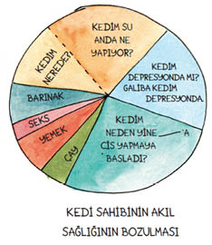

4
Bir gece geç saatlerde Tibby vals adımlarıyla yatak odasına girdi; bizi Pavarotti miyavlamasıyla selamladı. İkimiz de uykumuzdan uyanıp dimdik oturduk. Tibby sürünerek bir sandalyenin altına daldı.
“Tibby!” dedim.
“Tibby!” dedi Wendy.
Fibby bakmakla yetindi, hiç şaşırmamıştı.
Sonraki birkaç günü Tibby’yi kucaklayarak ve kendimi biraz, şey, içerlemiş hissederek geçirdim. Nereye gitmişti? Neden gitmişti? Ve şimdi neyi vardı? Mama kasesine kayıtsızca yaklaşıyor, kedice bir göğüs geçirip uzaklaşıyordu.
“Yemek yemiyor!” diye sızlandım Wendy’ye. “Hasta! Evden ayrı kaldığı için hastalanmış! Onca zaman uzaktaydı!”
Ama onu veterinere götürdüğümde 250 gram aldığı ortaya çıktı. Veteriner, kürkünün ipek gibi olduğunu, adımlarının da gençlik hafifliği taşıdığını söyledi.
“Harika,” dedim. Gücenmiştim.
Kedimin emniyette olmasının verdiği rahatlık duygusu hafiflemeye ve bir kutlama gecesinde küp gibi içmiş bir sporcu gibi yüzükoyun yere serilmiş horlayan gövdesinin uyandırdığı neşe azalmaya başladığında, içimde daha karanlık duygular uyandı. Kafa karışıklığı. Kıskançlık. Aldatılmışlık. On üç senelik kedimi tanıdığımı zannediyordum. Ne var ki o kedi endişeli ve utangaçtı. Bu kediyse açık denizlerde atıldığı maceralardan yeni dönmüş bir delifişekti. Hangi Siren çağrısı onu baştan çıkarıp peşinden sürüklemiş olabilirdi? Dolup taşan mama kaseleri ve sonsuz sayıda leziz ikramı olan o ışıltılı yere hâlâ gidiyor muydu?
Konuştuğum (sızlandığım diye okuyunuz) sırada, Wendy karşısındaki ilaç, depresyon, eve tıkılıp kalmanın sıkıntısından oluşan kasırganın kanepede karaya vurmasını seyredip, beni anladığını ve kızgınlığımı paylaştığını ifade ettiğini umduğu bir ifadeyle başını sallıyordu. Ama başının üzerindeki düşünce balonunda yazanlar gayet açıktı. Neon harfler, Ne var bunda? diye haykırıyordu. O bir KEDİ.
Eve döndü, diye düşünüyordu Wendy. Bu kadarı yetmiyor muydu?
Eh, aslında yetmiyordu.

Wendy anlayışlı davranmayı bir tarafa bırakıp öğüt vermeyi denedi. Belki kedi kapısını bir süreliğine kilitleyebilirdim, böylece Tibby başını alıp gidemezdi. Bunu bir defa denediğimi anlattım ona. Yıllar önce denemiştim. Gece onu eve kapatmış, sonra da ne olduğunu önce anlayamadığım gürültülü gümleme seslerini dinleyerek saatler boyunca uyanık yatmıştım. Tibby huzursuz bir hortlak gibi kendisini kapıya çarpıyordu. Yaşlı bir kediyi eğitmeye çalışmayacağım, dedim. Şimdi olmaz. Ayrıca, diye ekledim, mesele bu değil.
Düşünce balonu, O zaman Tanrı aşkına söyle, neymiş bu mesele? diye bastı çığlığı. Bilinçaltımın duyabileceği kadar yüksek sesle konuşmuştu.
“Açıklayamıyorum,” dedim; sesimde kibir vardı. “Gerçekten kedi sahibi olmamış birine açıklayamam.”
Bizler etrafta olmadığımızda, evcil hayvanlarımız nereye gider, neler yapar? Ve niye yaparlar bunları? Tüylü dostlarımıza yetmiyor muyuz? Hayvanseverler için, bunlar kaçınılmaz sorulardır. Böylece hayatındaki erkeğin göründüğü gibi biri olmadığını fark edenlere aşina gelecek bir araştırma süreci başladı. O beş hafta boyunca Tibby’nin nerede olduğunu bulmak için yapılan araştırma.
Tibby’nin İzinde Operasyonu işte böyle başladı.